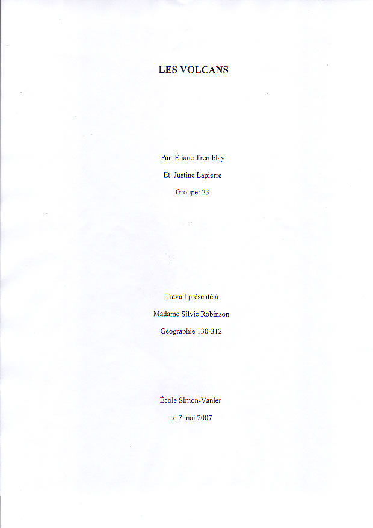
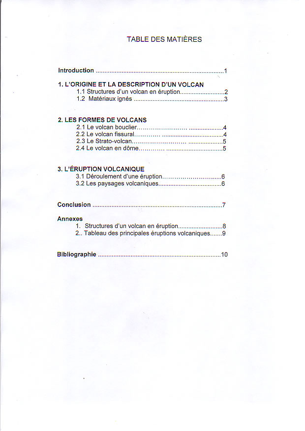
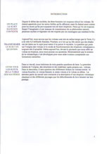
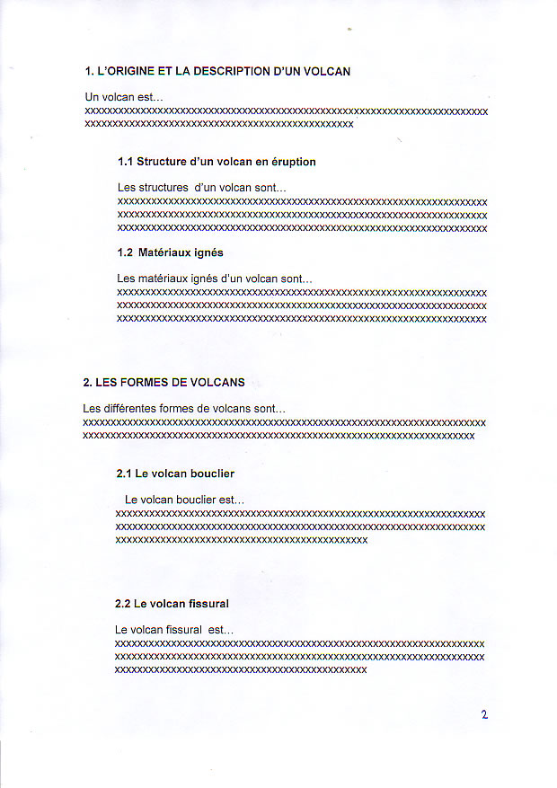
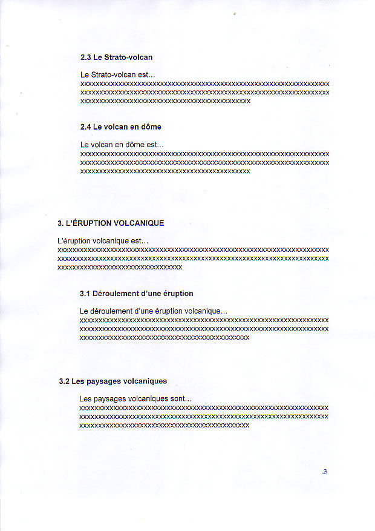
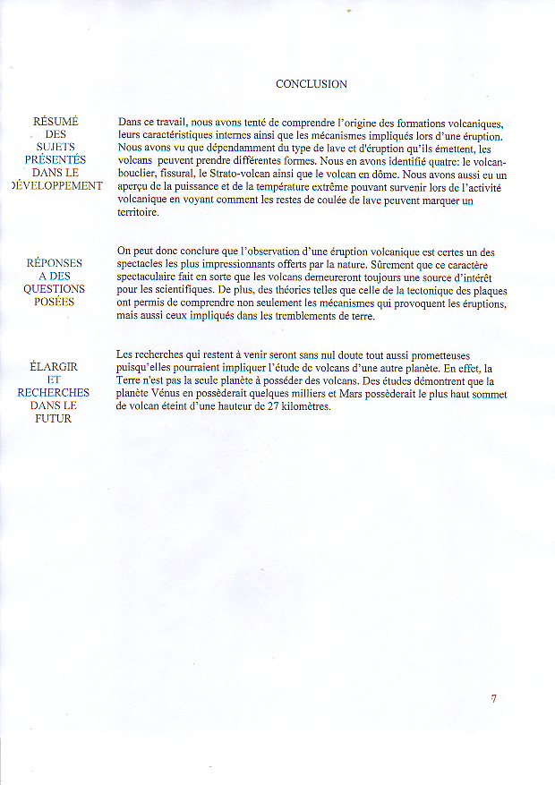
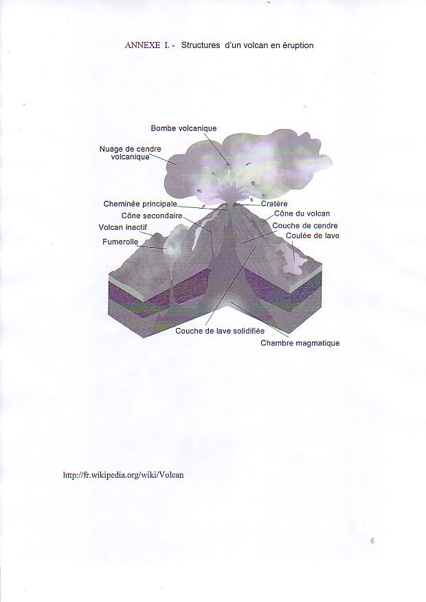
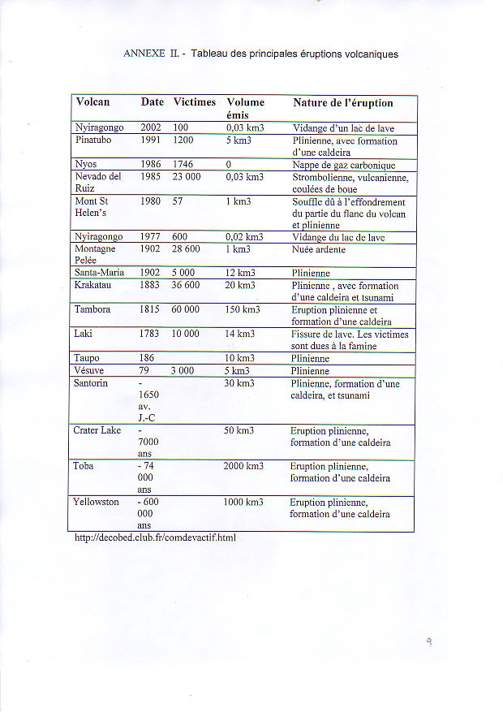
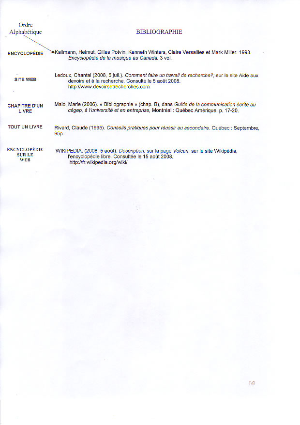

|
Les 10 étapes d'un travail de recherche |
|
|
Étape 1. Planifier son travail
- Choisir son sujet; une idée générale et des idées secondaires.
- Formuler une idée directrice en la faisant débutée par une partie de la question afin de s'assurer de répondre aux objectifs demandés par le prof.
- Fixer le contexte du sujet à partir
de questions telles que: de QUOI parle-t-on? de QUI s'agit-il? QUAND
cela s'est-il passé? POURQUOI cela s'est-il produit? COMMENT le
déroulement des événements est-il survenu? quelles sont les CONSÉQUENCES
pour aujourd'hui et pour demain?
- Faire un plan de travail avec des titres et des sous-titres.
Étape 2. Chercher de l'information
- Faire une 1ère recherche par mot-clé avec Wikipédia ou une autre encyclopédie.
- Sauvegarder les articles d'intérêts dans les favoris.
- Faire une 2ème recherche par mot-clé en utilisant des moteurs de recherche comme Google puis sauvegarder les sites d'intérêt dans les favoris.
- Faire du copier-coller de courts
extraits pertinents sur une feuille de Word ouverte en arrière plan.
Au fur et à mesure, copier-coller les références web en bas de la page.
- Imprimer les extraits si désiré.
- Surligner les informations pertinentes au feutre jaune.
- Encercler les mots-clés importants en lien avec le sujet.
- Consulter au besoin les sites internet des bibliothèques du quartier afin de trouver davantage de documentations.
- Noter les références de chaque documents consultés.
- Reformuler la question principale et tenter d'y répondre mentalement dans ses propres mots.
- Retravailler le plan de travail; une idée importante par paragraphe et rajouter des détails intéressants découverts en court de recherche.
- Vérifier si le plan de travail répond toujours aux exigences demandées.
- Commencer à écrire.
Étape 3. Faire le développement.
- Une idée importante par paragraphe.
- Inscrire les références au fur et à mesure.
- Utiliser les citations uniquement pour rapporter des
extraits qui vont appuyer l'idée principale ou parce qu'elles sont
vraiment pertinentes.
- Bien enchaîner les idées, pour bien passer d'un paragraphe à un autre en utilisant des marqueurs de relation tels que:
- D’abord... Premièrement... En premier lieu...
- Ainsi.., Autrement dit...En effet...
- De plus... D'ailleurs...Quant à...
- D'une part... D'autre part...
- Afin que... Dans ce but...
- Enfin... Finalement...
- Par contre... Cependant... D'un côté...Toutefois...Malgré tout...
- Par conséquent...Pour cette raison... Donc... Ainsi donc...
- Bien que...Dans la mesure où...Seulement
- En conclusion... Enfin... Ainsi donc... Pour conclure...
Étape 4. Faire l’introduction.
- Relire le développement pour mieux expliquer de quoi il est question dans le travail.
- L’introduction ne devrait pas dépasser 10% de la longueur d’un texte : pour un travail de dix pages, l’introduction devrait être concentrée dans une page.
- Présenter le sujet afin d’intéresser le lecteur.
- Amener le sujet : introduire le sujet de la recherche en le plaçant dans son contexte.
- Poser le sujet: susciter l'intérêt en transformant le sujet en questionnements.
- Expliquer le plan : présenter les grandes parties du travail qui sont aussi énumérés dans la table des matières.
- Expressions utiles à utiliser dans la composition
de l'introduction: Pour commencer, il est important de situer... Dans
ce travail, nous traiterons de...Ce travail a pour objet de... Les pages
qui suivent résument nos travaux sur...La première question qui se
pose, c'est de savoir...
Étape 5. Faire la conclusion.
- Relire l'introduction afin que la conclusion réponde bien aux questions de l'introduction.
- Faire une synthèse: Résumer les grandes lignes du travail traités dans le développement.
- Faire ressortir les conclusions ou les réponses à des questions posées.
- Élargir le sujet: Proposer de nouvelles pistes de recherche ou de réflexion pour le futur.
- Bien soigner la dernière phrase car elle laissera la dernière impression sur le correcteur.
- Expressions utiles
à utiliser dans la composition de la conclusion: En conclusion, nous
pouvons affirmer que...En résumé, ce travail était axé sur... Dans
l'ensemble, il conviendrait de...Au terme de cette analyse, nous
concluons...Au terme de cette analyse, nous concluons...
Étape 6. Organiser la bibliographie.
- Classer les références des documents par ordre alphabétique.
Livre: Auteur, Prénom (date). Titre du livre. Lieu d'édition : Éditeur, nombre de pages.
Chapitre d'un livre: Auteur, Prénom (date). « Titre du chapitre » (chap. 0), dans Titre du livre. Lieu d'édition : Éditeur, p. 0-1.
Section d'un Site Web: Auteur, Prénom (date de publication de la section). Titre de la section , sur le site Nom du site. Consulté le date.
Adresse sur le Web
Étape 7. Faire la page titre.
Étape 8. Organiser les annexes.
- On insère dans une annexe, de l'information qui aide
à comprendre la recherche: des croquis, tableaux, schémas,
statistiques, figures ou questionnaires.
- Les annexes sont placées par ordre de mention dans le texte.
- On les place après la dernière page de texte et avant la bibliographie.
Étape 9. Vérifier les normes de présentation.
- Alligner tout le texte (dans word, appuyer sur la touche justifier ou Ctrl+j).
- Paginer chaque page en bas à droite à partir de l'introduction.
- Utiliser toujours la même police d'écriture.
Étape 10. Relire et corriger les fautes.
- Suggestion: utiliser le logiciel Antidote pour corriger les fautes.
|
Modèle d'un travail de recherche à télécharger en PDF
ORDRE DE PRÉSENTATION DU TRAVAIL

1ère page: Page Titre

2ème: Table des matières

3ème: Introduction

4ème: Développement

Développement (suite)

5ème: Conclusion

6ème:Annexe I

Annexe II

Dernière page: Bibliographie
http://druide.com/antidote.html |
Bibliographie
Malo, Marie (2006). Guide de la communication écrite au cégep, à l'université et en entreprise, Montréal: Éditions Québec Amérique, 322 p.
http://www.collegeahuntsic.qc.ca/pagesdept/hist_geo/Atelier/Guide/introconclu.html
http://www.ebsi.umontreal.ca/jetrouve/projet/index.htm
http://www2.college-em.qc.ca/scienceshumaines/methodologie/travail/menu_travail_sm5_3.html
*Toute reproduction est permise à condition d'en mentionner la source. Merci!